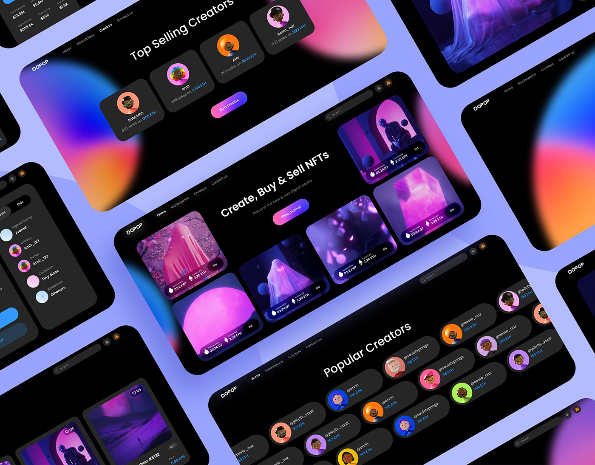

La experiencia de usuario (UX) y su importancia en el diseño web
La experiencia de usuario (UX) es un aspecto clave del diseño web, ya que se centra en cómo los usuarios interactúan con un sitio web y cómo se sienten al hacerlo. Un buen diseño de UX puede hacer que los usuarios se sientan cómodos y en control al navegar por un sitio web, lo que puede llevar a una mayor satisfacción y lealtad del usuario.
La importancia del diseño de interfaz de usuario (UI)

El diseño de interfaz de usuario (UI) se refiere a la forma en que se presenta el contenido de un sitio web al usuario, incluyendo el diseño visual y la disposición de los elementos en la pantalla. Un buen diseño de UI puede mejorar la experiencia de usuario y hacer que el contenido sea más fácil de entender y utilizar.
La relación entre UX y UI y cómo trabajan juntos
El diseño de UX y UI están estrechamente relacionados, ya que ambos se centran en mejorar la experiencia del usuario en un sitio web. Mientras que el diseño de UI se enfoca en la presentación visual de un sitio web, el diseño de UX se enfoca en cómo los usuarios interactúan con el contenido. Es importante que ambos aspectos trabajen juntos para crear una experiencia de usuario completa y satisfactoria.